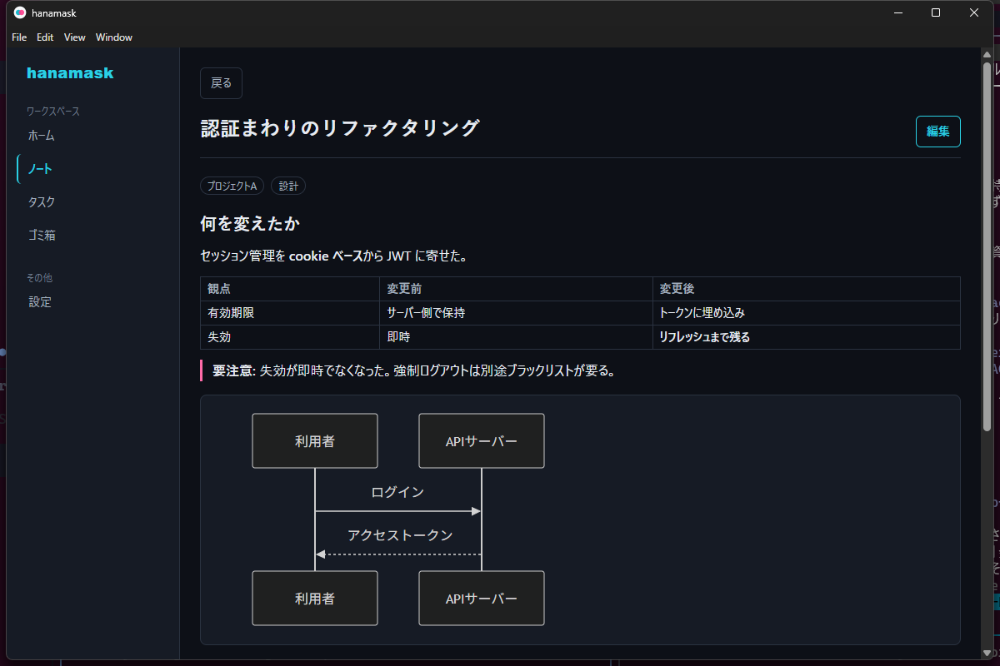
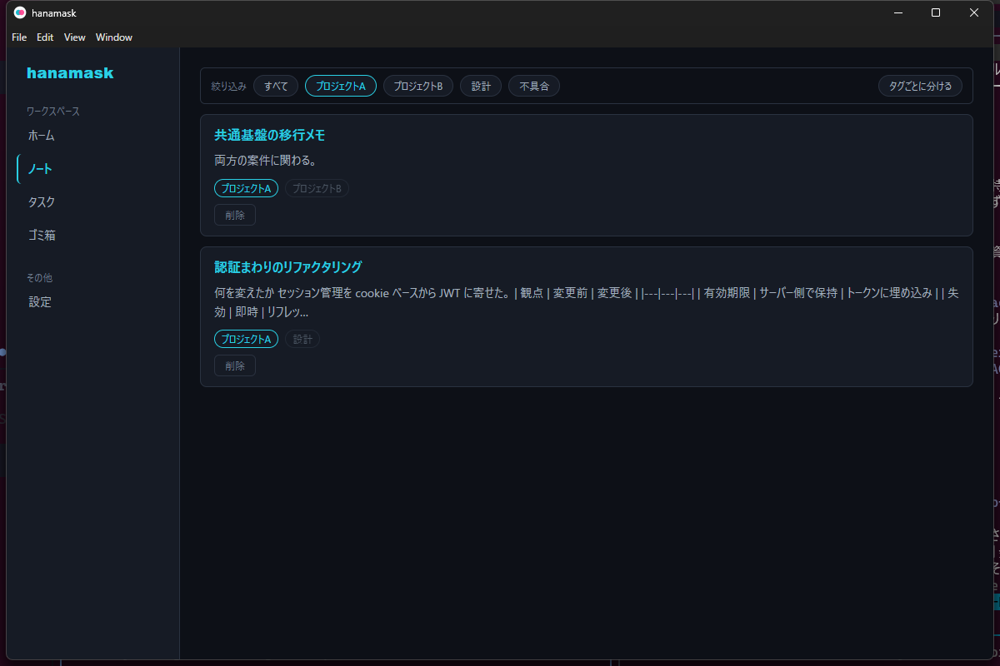

hanamask は AI エージェントとの協働に最適化された、ローカル完結のノート・タスク管理デスクトップアプリ。 MCP サーバーを内蔵し、Claude Code などの普段使いのエージェントがノートとタスクを直接読み書きします。データはあなたの PC の中だけに残ります。
Apache-2.0 ライセンス · Windows インストーラー（署名なし。初回は「詳細情報」→「実行」）
表、埋め込み HTML、Mermaid 図に対応。本文は信頼できない入力として扱い、<script>
や <style> は描画時に取り除きます。


エージェントが記録を増やし続けても、どのノート・タスクがどの案件のものかを一覧のまま判別できます。選んだタグ以外は消さずに薄く残すので、複数案件にまたがる記録も分かります。
エージェントの書き込みは、開いている画面へ手動リロードなしで反映。画面を見ていないときは OS の通知で知らせます。
ページが増えたらエージェントがノート（束）にまとめ、概要を書き直します。束を開かなくても案件の現在地が分かります。
SQLite とローカルファイルに閉じ、外部へ送りません。書き出し・取り込みで別の PC へ移せます。
必要なのは 2 つだけ。Node.js もソースコードも要りません。
Releases
から hanamask-Setup-*.exe
を実行し、アプリを起動したままにしておきます。ウィンドウを閉じても通知領域に残って動き続けます。
Claude Code なら次の 1 行。
claude mcp add --scope user --transport http hanamask http://127.0.0.1:39217/mcp他のエージェントでは設定ファイルに次を足します。登録したらエージェントを立ち上げ直してください。
{ "mcpServers": { "hanamask": { "type": "http", "url": "http://127.0.0.1:39217/mcp" } } }
ツールが使えるだけではエージェントは書きません。次の文面をエージェントの常設指示（Claude Code なら
~/.claude/CLAUDE.md）に貼り付けます。そのまま貼れる完成形なので、書き足しは要りません。
## 作業の記録は hanamask に書く
hanamask（ローカルのノート・タスク管理アプリ。MCPサーバーを内蔵）が接続されているとき、作業の記録・決定事項は hanamask に書く。頼まれるのを待たない。**記録の基本単位は「ページ」、ページを案件ごとに束ねたものが「ノート」。**
- **書く**: 作業の区切り、方針や仕様の決定、調べて分かったこと、次に持ち越すこと。`create_page` / `create_task` を使い、決定はその理由ごと本文にMarkdownで残す。タグを付けて案件を判別できるようにする（`list_tags` で既存のタグを再利用する）
- **育てる（新規作成より更新を優先する）**: 同じ話題のページ・タスクが既にあれば、新しく作らず `update_page` / `update_task` で追記・修正する。続きの作業は既存ページに経過を書き足し、タスクは着手時に `in_progress`、終わったら `done` へステータスを進める。1つの話題が複数ページに散ると、次に検索したとき全部を読まないと経緯が分からなくなる
- **束ねる（ページが増えたらノートにまとめ、概要を保つ）**: 1つの案件のページが増えてきたら `create_notebook` でノート（束）を作り、`move_page` で関係するページをそこへ入れる。**作業の区切りでは `update_notebook` を使い、束の概要（何の案件か・どこまで進んだか）を今の状態に合わせて書き直す。**概要は開かずに案件の現在地を知るための入口なので、古いまま置かない。利用者が手で書いた概要も、古くなっていれば書き直してよい（編集履歴に残り、復元できる）
- **読む**: 作業を始める前に `search_notes` か `semantic_search_notes`（意味検索）で過去の経緯を引く。同じ調査を二度やる・決定済みの方針を蒸し返すのを防ぐ。引いたページの内容が古くなっていたら、その場で更新する
- **ツールが見えないときは書かない**。アプリが起動していなければMCPサーバーも動いていない。無理に接続を試みず、その旨を伝える
- リポジトリ内の作業ログ（`docs/TASKS.md` 等）がある場合はそちらが正。hanamaskはそれを置き換えるものではなく、そこに残らない経緯・判断を拾う場所として使うアプリの設定画面「エージェントに書く習慣を持たせる」からもワンクリックでコピーできます。
あとは普段どおり話しかけるだけ。「今日調べたことをノートにまとめて」「さっきのバグ、タスクに積んでおいて」。